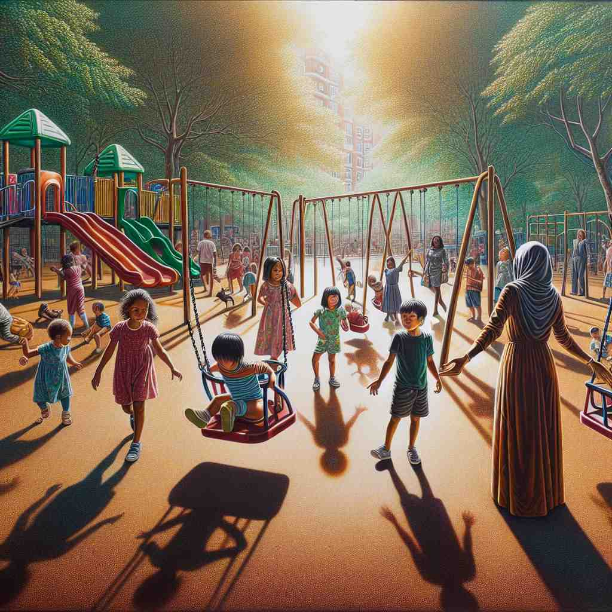

💬 I want to give them apples from the market. 我想给他们从市场买的苹果。

💬 The children want to play with them at the playground. 孩子们想在游乐场和他们一起玩。
💬 I want to give them apples from the market. 我想给他们从市场买的苹果。
💬 The children want to play with them at the playground. 孩子们想在游乐场和他们一起玩。
🔈 [ðem][ðəm]
💬 I have some apples. I will give them to my friends. 我有一些苹果。我要把它们给我的朋友们。
🔍 它们: 你有三个苹果，你想把这三个苹果都给你的朋友。'them' 指的是这三个苹果。
💬 The children are playing in the park. Their parents are watching them. 孩子们正在公园里玩耍。他们的父母正在看着他们。
🔍 他们: 小明、小红和小刚三个小朋友在公园里玩。他们的父母正在看着这三个小朋友玩耍。'them' 指的是小明、小红和小刚这三个小朋友。
💬 I bought some new books. I can't wait to read them. 我买了一些新书。我迫不及待地想读它们。
🔍 它们: 你买了三本新书：《小王子》、《恐龙世界》和《海底两万里》。你想读这三本书。'them' 指的是这三本书。
🧠 'them' 指的是之前提到过的复数的人或物。
⬅️ they（他们/它们/她们）: 'they' 是指代复数的人或物，'them' 也是指代复数的人或物，但是 'them' 用在动词或介词之后。
🔀 him（他）、her（她）、it（它）: 这些词都指代单数的人或物，与 'them' 指代复数的概念相反。
🌳 'them' 是代词 'they' 的宾格形式，用于指代前文提到的多个人或物体，源自古英语 'þām' 的对格。
💡 可以通过记忆代词变化的顺序来记忆 'them'：主格 'they' -> 宾格 'them'，对应的意义也从主体转为客体，表示接收动作的一方。
🗝️ pron. used to refer to a singular person of unspecified gender 用于指代性别不明确的单个人。
🎭 在一个设计工作室里，主管正通知团队关于新成员的加入。她说：'我们今天要欢迎我们新加入的一位同事，他们将负责项目管理。'通过使用'them'来指代还未指定性别的新成员。
💬 If someone calls, tell them I'll call back later. 如果有人来电，请告诉他们我稍后会回电。
🤔 扩展使用，以避免性别歧视或在性别不明确时使用
🗝️ pron. used to refer to people in general 用于指代一般人
🎭 在一个繁忙的城市广场上，路过的人们在街头艺人的表演前驻足，大家都聚在一起欣赏乐曲。演出结束后，艺人微笑着说：'谢谢你们的掌声，真是太棒了。'这里的'them'指代广场上所有的人。
💬 I like to help them as need help. 我喜欢在他们需要帮助时给予帮助。
🤔 从指代特定群体扩展到泛指一般人
🗝️ pron. used after than or as in comparisons 用于比较中在“than”或“as”之后使用。
🎭 在一个学校运动会上，两位跑步选手正在冲刺。旁边的观众议论纷纷：'看，迈克跑得比他们所有人都快。'这里的'them'是在比较中指代与迈克竞赛的其他选手。
💬 These shoes are bigger than them. 这些鞋子比他们的大。
🤔 在比较结构中作为比较对象